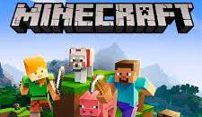

<html></html>
<head>


<ul><li><h1>Minecraft Mods<h1></li></ul>
    The first Minecraft mods worked by decompiling and modifying the Java source code of the game. The original version of the game, now called Minecraft: Java Edition, is still modded this way, but with more advanced tools. Minecraft: Bedrock Edition, a version of the game available for mobile, consoles, and Microsoft Windows, is written in C++,<br> and as a result cannot be modded the same way. Instead, modders must use "add-ons" written in a scripting language to add content</p>
    <ul><li><h2>Minecraft</h2</li></ul>
<p></p>
is a 2011 sandbox game developed and published by Swedish video game developer Mojang Studios. Originally created by Markus "Notch" Persson using the Java programming language, the first public beta build was released on 17 May 2009. The game would be continuously developed from then on, receiving a full release on 18 November 2011.
<p></p>
    
  <p></p>
    <h2>All rights reserved to <a href="https://ar.wikipedia.org/wiki/%D8%A7%D9%84%D8%B5%D9%81%D8%AD%D8%A9_%D8%A7%D9%84%D8%B1%D8%A6%D9%8A%D8%B3%D8%A9"target=blank>wikipedia</a><br> <br> <a href="https://github.com/Fn3e?tab=repositories" target="_blank">my github</a></h2>
    
